Monks, Meditations, Mafias
November 28, 2024
Following kindergarten graduation, I spent my first week of summer break at safety town. Safety town is a week long camp for young kids to learn about certain safety issues at school and in the community.
The first few days were carefree as we learned about traffic. We rode bikes over blacktop painted as a city. There were roads, street signs, and traffic lights. Our speed limit was staying within arms reach of our assigned teenager. Green means go, red means stop, and yellow means yield.
As the week progressed, the topic shifted from traffic to stranger danger.
"There are bad people that want to poison and kidnap kids," one of the leaders explained. "Always stay away and don't accept anything from those you don't know."
Shortly after, the adults and teenagers mysteriously drifted inside the building. The group of us 6 year old looked around confused. Some began socializing, while others hopped on their bike and rode as fast as they could.
A foreign man appeared on the scene. He wondered into our blacktop city and began pulling suckers out of his bag, offering them to us kids.
Some kids graciously accepted the sucker and enjoyed the delicacy while others shouted - "It's a stranger!"
I was unsure of what side to take, so I took in the scene. He hadn't kidnapped anyone yet so it didn't seem as if there was a physical harm. Hedging my bets, I accepted the blue tootsie pop but decided to hold on to it.
A big kid with a red sucker spent no time discerning and immediately plopped it in. He began running around, arms flailing at his sides, with the stick hanging out his mouth. If the stranger had injected it with poison, I figured it would become evident shortly and he would drop. If not, I was in the clear to enjoy my own.
Amongst the screaming of some, the big kid continued running and the teenagers emerged from the building. We asked the teenagers what they were doing inside the building. "We were watching the new Spider-Man."
Brother! I watched the cartoons this morning and Spider-Man doesn't come out until next Friday! What are you talking about?! My mind tried to comprehend how Westlake Safety Town had early access to Spider-Man 3. I knew some of it was filmed in Cleveland - maybe they had some connections? Either way something seemed off.
Then one of the teenagers hit me with, "What's in your hand?"
They caught me red (blue) handed. Unsure of how to explain my rational at the time, I simply handed it over. Other kids did the same. The fat kid, disappointed, took the red wrapper out of his pocket and placed his tootsie pop inside. He dwindled it down to where the chocolate was showing. Luckily, he was still standing.
The adult leaders, teenagers, and the staged stranger joined together to close with a final message regarding the dangers behind strangers.
I left that day with an unsettling feeling. It has lingered around a majority of my life as unquenched curiosity. Is there any validity to that statement that strangers are dangerous? Surely there are people who find themselves in damaging circumstances and spread it to others. But I think it's fun to look at things glass half full.
Post grad I found myself engaged in free form travel.
When I was on the road, a kind lady named Kim graciously gave me a ride. After exchanging pleasantries, we began chatting.
"How long are you traveling for Sam?"
"I'm not too sure right now."
"Hey! I love to travel that way too. Whenever I go to Thailand I just buy a one way ticket!"
"Thailand, that's sweet. What brings you to Thailand?"
Kim shared the far out story about how her introduction to Buddhism rapidly escalated to where she assisted a monk from escaping the mafia. The mafia was involved in a money laundering scheme and repeatedly attempted to place the monk in a psychiatric hospital to aid their ploy. That's where Kim came in.
The experience was life changing. Following this series of events, Kim now spends the majority of her year across South East Asia living with and around the Monks.
It's been cool keeping in touch with Kim over the past year. A few weekends back, she invited me to a temple in Pittsburgh as the high monks from Thailand happened to be visiting.
The Foreign. The Abstract. Situations where one has zero understanding of what could happen and no amount of preparation could prepare oneself. Amongst a culture of go go go - I love coming across situations where pure presence becomes the only option. There is nothing to prove, no one to be. You're just there. And it's happening.
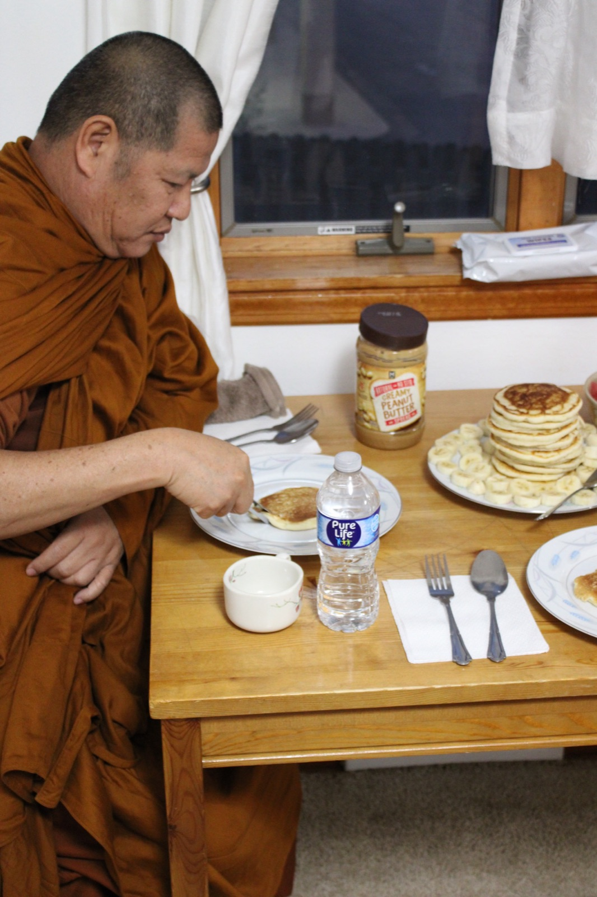
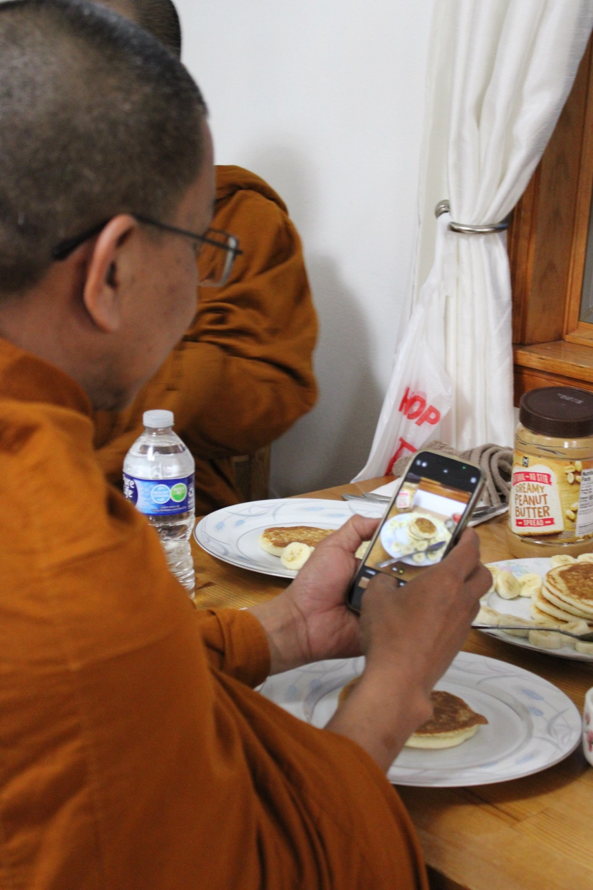
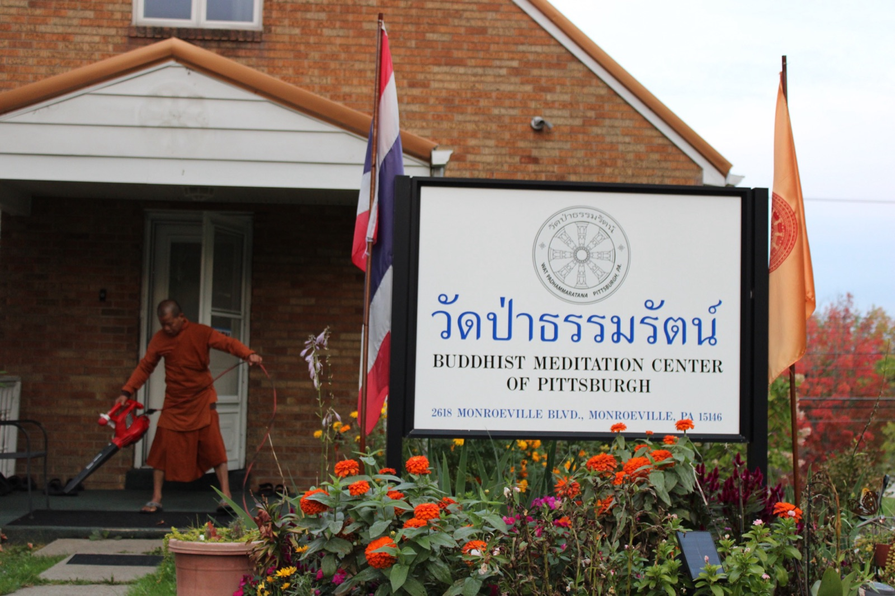
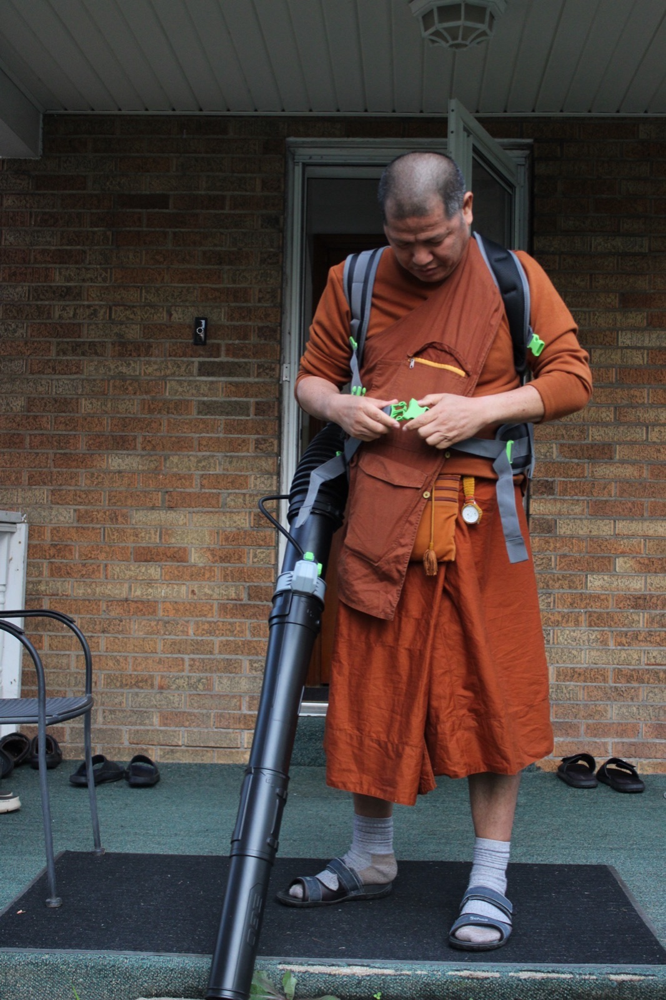
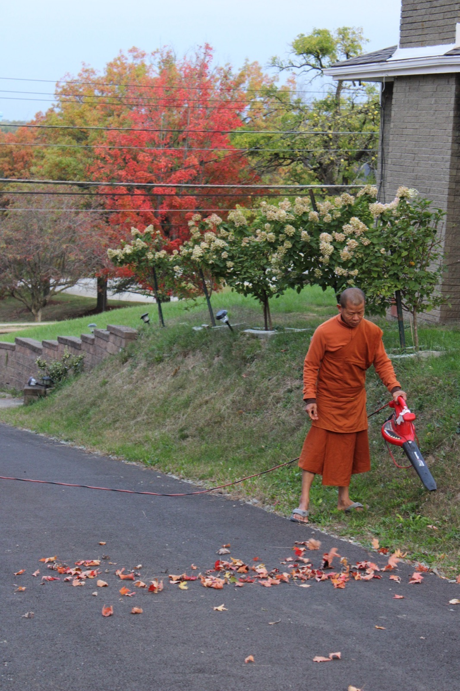
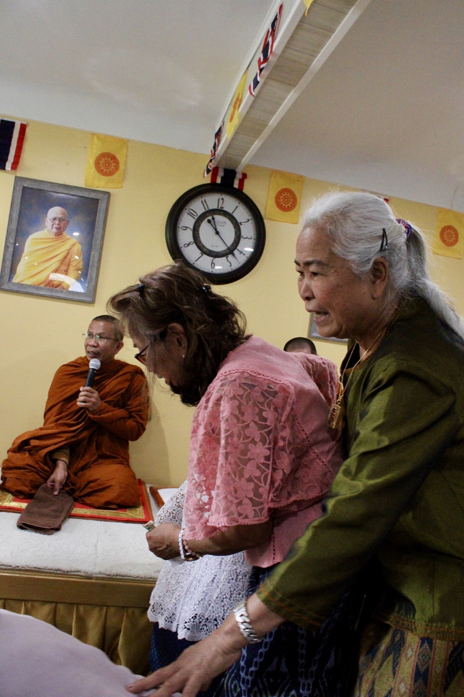
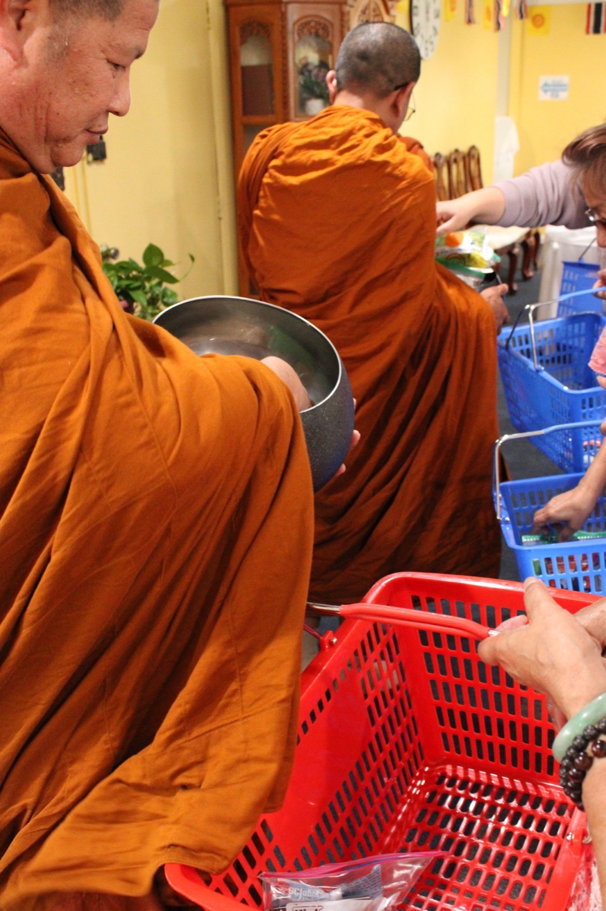
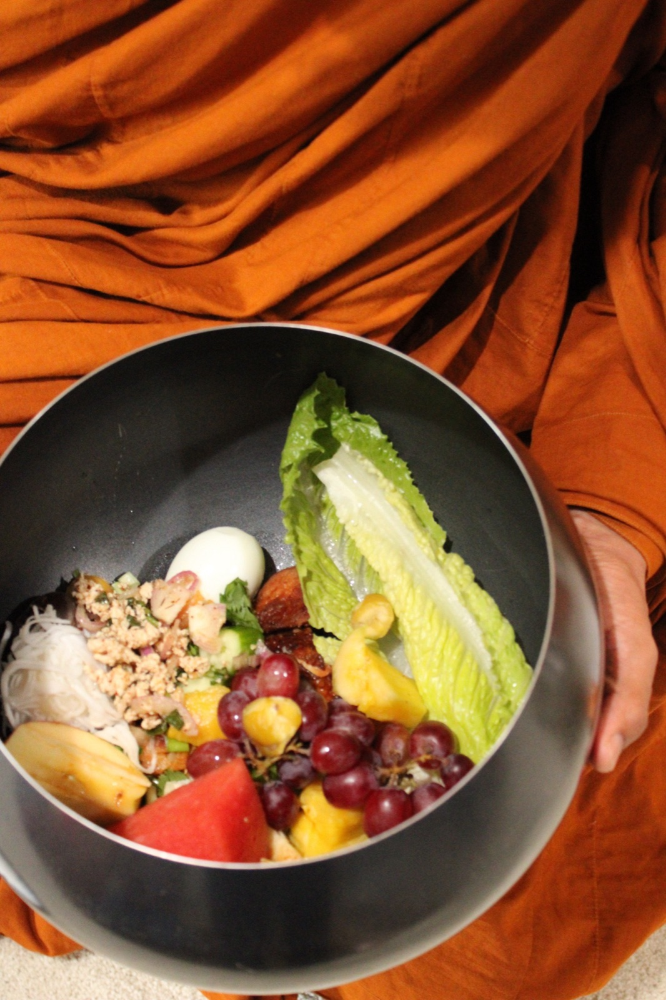
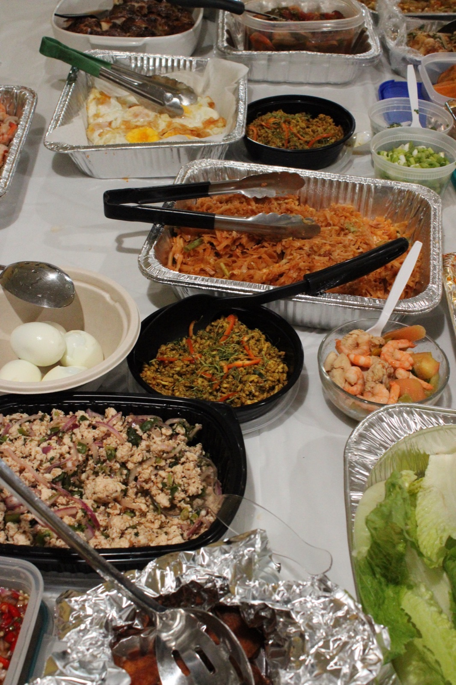
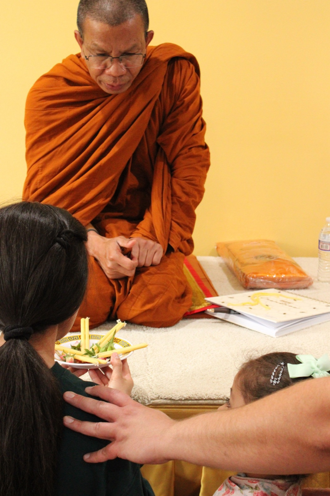
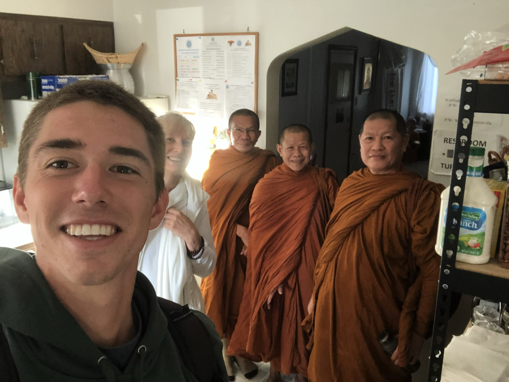
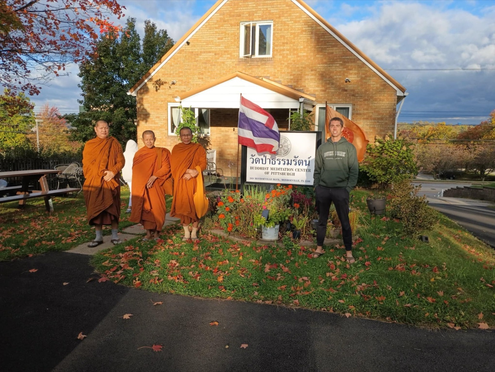